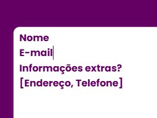

Novas funções!
O Loko Forms veio com novidades para melhorar a sua experiência!
Novos atalhos!
Pressione Alt + / para ver os novos atalhos!
Nova interface.
Os botões e histórico do formulário foram movidos! Agora podem ser facilmente acessados no canto da tela.
Agora também as notificações de menor aviso aparecem no topo da tela ao invés do meio! Ficando por 5 segundos.

Novos elementos.
Agora há dois novos elementos que podem ser utilizados no formulário, sendo eles:
Checkbox - Elemento de condição.
Com esse elemento, agora é possível adicionar respostas de sim ou não ou fazer campos aparecerem pela condição!

Seleção - Elemento de seleções fixas.
Com esse elemento, agora é possível adicionar respostas fixas para escolher!